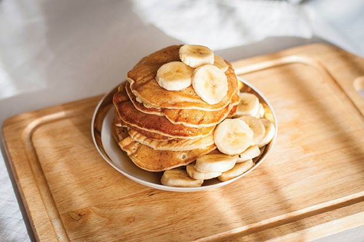

PANQUECA AMERICANA

Panqueca americana
INGREDIENTES
- 1 e 1/4 xícara (chá) de farinha de trigo
- 3 colheres (chá) de fermento em pó
- 3 colheres (chá) de fermento em pó
- 2 ovos levemente batidos
- 1 xícara (chá) de leite
- 2 colheres (sopa) de manteiga derretida
- pitada de sal
- óleo
MODO DE PREPARO
-
Misture em um recipiente: a farinha, o açúcar, o fermento e o sal.
- Em outro recipiente, misture os ovos, o leite e a manteiga.
- Acrescente os líquidos aos secos, sem misturar em excesso.
-
O ponto da massa não deve ser muito líquido, deve escorrer lentamente.
-
Aqueça e unte a frigideira com óleo, coloque a massa no centro, cerca
de 1/4 xícara por panqueca.
- Vire a massa para assar do outro lado e está pronto!